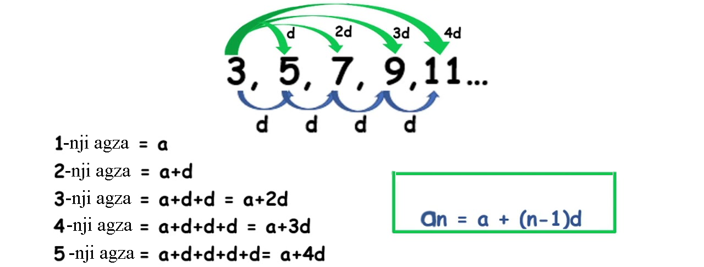

San yzygiderligi.
Haýsydyr bir agzadan başlap, yzygi-
derligiň islendik agzasyny, onuň öňündäki (bir ýa-da birnäçe) agzalaryň üsti bilen aňladyp bolýan formulalara rekurrent diýilýär
Ýygnalýan yzygiderlikler - tertip belgileri çäksiz artanda, kesgitli sana mümkin boldugyndan golaýlaşýan yzygiderlikler.
Meselem 1-njide n näçe artsa yzygiderlik 0-a golaýlaýar, 2-njide n näçe artsa yzygiderlik 1-e golaýlaýar
1).
an =
,
2).
an =
Dargaýan yzygiderlikler - predeli bolmadyk yzygiderlikler.
1).
an = n,
2).
an = 2n
Kesgitleme:
Eger islendik mümkin boldugyndan kiçi položitel ε san üçin ähli n > N bahalarda
|xn – a| < ε
deňsizlik ýerine ýetýän, şeýle bir N natural sany görkezip bolsa, onda a sana (xn) yzygiderligiň predeli diýilýär.
Monoton we çäklenen yzygiderligiň predeliniň barlygy.
Artýan, kemelýän, artmaýan, kemelmeýän yzygiderliklere monoton yzygiderlikler diýilýär.
Kesgitleme: Eger yzygiderlikde ikinjiden başlap, onuň her bir agzasy öň ýanyndakydan uly bolsa, ýagny islendik n üçin xn + 1 > xn deňsizlik ýerine ýetse, onda (xn) yzygiderlige artýan yzygiderlik diýilýär.
Kesgitleme: Eger yzygiderlikde ikinjiden başlap, onuň her bir agzasy öň ýanyndakydan kiçi bolsa, ýagny islendik n üçin xn + 1 < xn deňsizlik ýerine ýetse, onda (xn) yzygiderlige kemelýän yzygiderlik diýilýär.
Arifmetik progressiýa

Kesgitleme:Ikinji agzadan başlap her bir agzasy
öň ýanyndaky agzanyň üstüne şol bir sanyň goşulmagy bilen alnan yzygiderlige arifmetik progressiýa diýilýär.
Kesgitlemä görä:
an + 1 = an + d;
n-nji agzasynyň formulasy:
an = a1 + d(n-1)
Bu ýerde d - arifmetik progressiýanyň tapawudy. d > 0 bolanda progressiýa artýar, d < 0 bolanda progressiýa kemelýär.
Arifmetik progressiýanyň esasy häsiýeti:
Yzygiderlik birinjiden (eger tükenikli arifmetik prog ressiýa bolsa, iň soňkudan) başga her bir agzasy, onuň öňündäki we yzyndaky agzalaryň orta arifmetiki bahasyna deň bolan ýagdaýynda we diňe şol ýagdaýda arifmetik progressiýadyr:
an =
Arifmetik progressiýanyň n agzalarynyň jeminiň formulasy.
Sn =
Mysal: Goşulyjylary 1-den n-e çenli ähli natural sanlar bolan 1 + 2 + 3 + … + n jemi tapalyň.
Arifmetik progressiýanyň n agzalarynyň jeminiň formulasy boýunça hasaplasak:
1 + 2 + 3 + ... + n =
Geometrik progressiýa
Kesgitleme:Ikinjiden başlap her bir agzasy öň ýanyndaky agzanyň şol bir sana köpeldilmegi netijesinde alnan, her biri noldan tapawutly bolan sanlaryň yzygiderligine geometrik progressiýa diýilýär.
Kesgitlemä görä:
bn + 1 = bn * q;
islendik n natural san üçin
= q, q sana geometrik progressiýanyň maýdalawjysy diýilýär.
Eger q > 1 bolsa, onda b1> 0 bolanda progressiýa artýar, b1 < 0 bolanda kemelýär.
n-nji agzasynyň formulasy:
bn = b1*qn - 1
Geometrik progressiýanyň ilkinji n agzalarynyň jeminiň formulasy.
Sn =
|q| < 1 bolanda tükeniksiz geometrik progressiýanyň jemi
Kesgitleme: Eger geometrik progressiýanyň maýdalawjysynyň moduly birden kiçi bolsa, onda oňa tükeniksiz kemelýän progressiýa diýilýär.
n tertip belgisiniň artmagy bilen bu progressiýanyň agzalary nola ýakynlaşýar. Bu progressiýa tükeniksiz kemelýän progressiýa diýilýär. Onuň maýdalawjysynyň modulynyň birden kiçidigini belläp geçeliň: |q| < 1.
Tükeniksiz kemelýän geometrik progressiýanyň jeminiň formulasy
Sn =